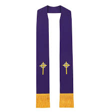

The Sacrement of Reconciliation
By Samuel Green
-What is it?
-The Sacrement of Reconcilitation is a method where individuals can be forgived and free of their sins.
This Sacrement usally takes place inside a reconcilliation room.
-The Four Parts
-Confession
-The act of expressing sorrow and remorse for one's sins.be used in a liturgical environment or in solitude.
-Act of absoloution
-A Catholic prayer the expresses sorrow for their sins.
-Absoloution
-The remission of sin and the punishment due to sin, granted by the Church.
-Penace
-Penance is any act or a set of actions done out of repentance for sins committed.
-Symbols in the Sacrement of Reconciliation
-Symbol of Reconciliation

-Is known as the symbol of Reconciliation.
-The symbol is based on jesus’s words to Peter in the book of Matthew.
-It gives the Church authority to forgive sins.
-The Stole

-The Stole symbolizes the ordained Priest.
-The Priest is a representative of Christ who grants sacramental absolution.
-The stole is important to the church because it is the symbol of immortality
-Symbolizes the priest’s authority.
-Prayer of Absoloution

-Happens after the Act of Contrition.
-The Priest offers the Prayer of Absolution which is a blessing that removes a person's sins.
During Reconciliation, after the penitent makes the Act of Contrition, the priest offers the Prayer of Absolution which is the blessing that removes the person’s sins, during this act he extends his right hand of the penitent’s head.
- The raised hand is symbolising the action of the priest during absolution.
-How did Jesus show this?
-Jesus taught about the importance of forgiveness. In Matthew 6:14-15, He emphasized that forgiveness from God is linked to our forgiveness of others.
-This principle is foundational to the sacrament.
-Scripture Passages
-The Parable of the Prodigal Son (Luke 15:11-32):
-This parable illustrates God's willingness to forgive and welcome back those who repent. The father’s unconditional love and forgiveness towards his wayward son model the divine mercy and reconciliation that the sacrament represents.
-The Parable of the Lost Sheep (Luke 15:3-7):
-This story shows the joy in heaven over one sinner who repents, emphasizing the value of each person and the importance of seeking reconciliation.
-Key Definitions
Reconciliation:
Definition: The sacrament in which Catholics confess their sins to a priest and receive absolution, restoring their relationship with God and the Church.
Confession:
Definition: The act of admitting one’s sins to a priest in the sacrament of reconciliation. It involves acknowledging sins and expressing genuine remorse.
Absolution:
Definition: The priest's pronouncement of forgiveness of sins, granted through the power of the Holy Spirit, which absolves the penitent from their sins.
Penance:
Definition: The act or prayer given by the priest after confession, which the penitent must perform as a sign of repentance and to repair the harm caused by sin.
Contrition:
Definition: Sincere remorse for having sinned, including a firm resolve to avoid future sins. It can be either perfect (sorrow for love of God) or imperfect (sorrow for fear of punishment).
Sin:
Definition: An act against God’s commandments and moral law. In the context of reconciliation, sins are classified as mortal (serious) or venial (less serious).
Examination of Conscience:
Definition: The process of reflecting on one’s actions and decisions to identify sins before making a confession. It helps the penitent prepare for the sacrament.
Penitent:
Definition: The person who confesses their sins and seeks forgiveness through the sacrament of reconciliation. They must be truly sorry and willing to amend their life.
Grace:
Definition: The free and unmerited favor of God, given to help believers live a Christian life. In the sacrament of reconciliation, grace restores the penitent’s relationship with God.
Reparation:
Definition: The act of making amends for sins or wrongdoings. In reconciliation, it involves both the penance assigned by the priest and efforts to correct the harm caused by sin.